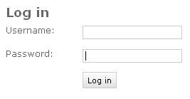
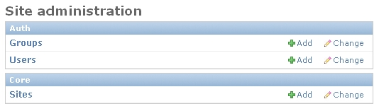
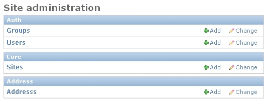
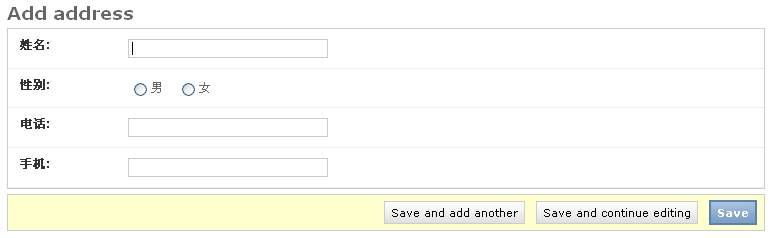
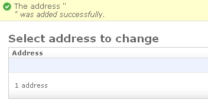
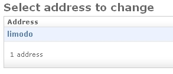

| 作者: | limodou |
|---|---|
| 联系: | limodou@gmail.com |
| 版本: | 0.1 |
| 主页: | http://wiki.woodpecker.org.cn/moin/NewEdit |
| BLOG: | http://www.donews.net/limodou |
| 版权: | FDL |
敢问路在何方，路在脚本。如果你坚持下来，一定会有收获的。
直到目前我们已经学了：
- settings.py的设置
- url dispatcher
- 模板
- session
- app
- model
其实在某些方面，使用 Django 还可以更加方便。而且我们还有许多东西没有学，一点点跟着我学吧。
我有一个通讯录，它是保存在 Excel 文件中的，我不想每次到目录下去打开它，我希望用 Django 做一个web上的简单应用，如何做呢？
#coding=utf-8
from django.db import models
# Create your models here.
class Address(models.Model):
name = models.CharField('姓名', maxlength=6, unique=True)
gender = models.CharField('性别', choices=(('M', '男'), ('F', '女')),
maxlength=1, radio_admin=True)
telphone = models.CharField('电话', maxlength=20)
mobile = models.CharField('手机', maxlength=11)
这回 model 复杂多了。在上面你可以看到我定义了四个字段： name , gender , telpnone , mobile 。其中 gender 表示性别，它可以从一个 tuple 数据中进行选取。并且在后面的 radio_admin=True 表示在 admin 的管理界面中将使用 radio 按钮来处理。
Note
Django 提供了许多的字段类型，有些字段类型从数据的取值范围来讲没有什么区别，但之所以有这种区别，是因为：Django 的数据类型不仅仅用于创建数据库，进行 ORM 处理，还用于 admin 的处理。一方面将用来对应不同的 UI 控件，另一方面提供对不同的数据类型将进行不同的数据校验的功能。
在 Django 中每个字段都可以有一个提示文本，它是第一个参数，如果没有则会使用字段名。因此我定义的每个字段为了方便都有一个对应的汉字提示文本。
Note
在 0.92 版之前，如果想要使用 admin 来编辑一个字段，还需要向 model 中的字段加入 core=True 参数。但 0.92 不再需要了。
因为本节主要是讲 admin 的使用。admin 是 Django 提供的一个核心 app(既然是 app 就需要安装，一会就看到了)，它可以根据你的 model 来自动生成管理界面。我为什么要用它，因为有了这个管理界面，对于通讯录的增加、删除、修改的处理界面完全可以通过 admin 来自动生成，我不用自已写。不相信吗？我们就会看到了。
那么 admin 到底可以带来些什么好处呢？它的功能很强大，不仅界面漂亮，还能对数据提供操作记录，提供搜索。特别是它是在用户权限控制之下，你都可以不用考虑安全的东西了。并且它本身就是一个非常好的学习的东西，特别是界面自动生成方面，学习它的代码可以用在我们自已的定制之中。当然，你许你用不上 admin ，它的确有一定的适应范围，不过对于大部分工作来说它可能足够了。对于那些交互性强的功能，你可能要自已实现许多东西，对于管理集中，主要以发布为主的东西，使用它可以节省你大量的时间。至于怎么使用，你要自已去权衡。但这一点对于快速实现一个 web 应用，作用非常大，这是 Django 中的一个亮点。
INSTALLED_APPS = (
'django.contrib.auth',
'django.contrib.contenttypes',
'django.contrib.sessions',
'django.contrib.sites',
'django.contrib.admin',
'newtest.wiki',
'newtest.address',
)
这里我们加入了两个 app ，一个是 address ，还有一个是 django.contrib.admin 。 admin 也是一个应用，需要加入才行，后面还要按添加 app 的方式来修改 url 映射和安装 admin app。这些与标准的app的安装没有什么不同。
from django.conf.urls.defaults import *
urlpatterns = patterns('',
# Example:
# (r'^testit/', include('newtest.apps.foo.urls.foo')),
(r'^$', 'newtest.helloworld.index'),
(r'^add/$', 'newtest.add.index'),
(r'^list/$', 'newtest.list.index'),
(r'^csv/(?P<filename>\w+)/$', 'newtest.csv_test.output'),
(r'^login/$', 'newtest.login.login'),
(r'^logout/$', 'newtest.login.logout'),
(r'^wiki/$', 'newtest.wiki.views.index'),
(r'^wiki/(?P<pagename>\w+)/$', 'newtest.wiki.views.index'),
(r'^wiki/(?P<pagename>\w+)/edit/$', 'newtest.wiki.views.edit'),
(r'^wiki/(?P<pagename>\w+)/save/$', 'newtest.wiki.views.save'),
# Uncomment this for admin:
(r'^admin/', include('django.contrib.admin.urls')),
)
缺省的 urls.py 中在最后已经加上了 admin 的映射，不过是一个注释，把注释去掉就好了。这里要注意，它使用了一个 include 方式。对于这种URL的解析 Django 是分段的，先按 r'^admin/' 解析(这里没有 $)，匹配了则把剩下的部分丢给 django.contrib.admin.urls.admin 去进行进一步的解析。使用 include 可以方便移植，每个 app 都可以有独立的 urls.py ，然后可以与主 urls.py 合在一起使用。配置起来相对简单。而且可以自由地在主 urls.py 中修改应用URL的前缀，很方便。
进入 http://localhost:8000/admin
进入看一看吧。咦，要用户。对，admin 功能是有用户权限管理的，因此一个 admin 替你完成了大量的工作：用户的管理和信息的增加、删除、修改这类功能类似，开发繁琐的东西。那么我们目前还没有一个用户，因此可以在命令下创建一个超级用户，有了这个用户，以后就可以直接在 admin 界面中去管理了。
manage.py shell >>> from django.contrib.auth.create_superuser import createsuperuser >>> createsuperuser()
它会让你输入用户名，邮件地址和口令。
Note
如果你使用了 syncdb 的话，应该在运行的最后，当没有超级用户时会提示你创建的。因此这一步可能会省略掉。如果想直接创建可以使用这种方法。
Note
这种方法与 authentication 所讲述的不完全一致，原因就是这种方法不用设置 PYTHONPATH 和 DJANGO_SETTING_MODULE 环境变量，所以要简单一些。
这回再进去看一下吧。
上面已经有一些东西了，其中就有用户管理。但如何通过 admin 增加通讯录呢？别急，我们需要在 model 文件中增加一些与 admin 相关的东西才可以使用 admin 来管理我们的 app 。
Note
因此是否启用 admin 管理取决于你。只要在 model 中增加 admin 相关的部分，我们的应用才可以在 admin 中被管理。
#coding=utf-8
from django.db import models
# Create your models here.
class Address(models.Model):
name = models.CharField('姓名', maxlength=6, unique=True)
gender = models.CharField('性别', choices=(('M', '男'), ('F', '女')),
maxlength=1, radio_admin=True)
telphone = models.CharField('电话', maxlength=20)
mobile = models.CharField('手机', maxlength=11)
class Admin: pass
Note
在 0.92 版之前 Admin 内部类需要写成
class META:
admin = meta.Admin()
在 0.92 版发生了变化。
有了这个东西，你就可以在 admin 中看到 adress 这个 app 了。再到浏览器中看一下是什么样子了。
看见了吧。上面有增加和删除的按钮，先让我们点击一下增加吧。
这个自动生成的界面是不是很不错。增加一条保存起来了。不过我发现当我输入 limodou 时，只能输入 limodo 好象 u 输不进去。为什么？因为我把姓名按汉字算最多6个就够了，一旦我使用英文的名字可能就不够。因此这是一个问题，一会要改掉。
怎么新增的记录叫 <Address object> 这样看上去很别扭。为什么会这样，因为没有定义特殊的方法。下面就让我们定义一下。
Note
在 0.92 版之前，我发现是看不到(其实还是可以点的。只是不容易)。
#coding=utf-8
from django.db import models
# Create your models here.
class Address(models.Model):
name = models.CharField('姓名', maxlength=6, unique=True)
gender = models.CharField('性别', choices=(('M', '男'), ('F', '女')),
maxlength=1, radio_admin=True)
telphone = models.CharField('电话', maxlength=20)
mobile = models.CharField('手机', maxlength=11)
def __repr__(self):
return self.name
class Admin: pass
改好了，再刷新下页面。这次看见了吗？增加了一个 __repr__ 方法。好象使用 __str__ 也可以，不过我也懒得去研究应该使用哪个了。这个方法将在显示 Address 实例的时候起作用。我们就使用某个联系人的姓名就行了。
你记得吗？Model 是与数据库中的表对应的，为什么我们改了 model 代码，不需要重新对数据库进行处理呢？因为只要不涉及到表结构的调整是不用对表进行特殊处理的。不过，我们马上要修改表结构了。
姓名留短了真是不方便，另外我突然发现需要再增加一个房间字段。
#coding=utf-8
from django.db import models
# Create your models here.
class Address(models.Model):
name = models.CharField('姓名', maxlength=20, unique=True)
gender = models.CharField('性别', choices=(('M', '男'), ('F', '女')),
maxlength=1, radio_admin=True)
telphone = models.CharField('电话', maxlength=20)
mobile = models.CharField('手机', maxlength=11)
room = models.CharField('房间', maxlength=10)
def __repr__(self):
return self.name
class Admin: pass
这回表结构要改变了，怎么做呢？
目前 Django 没有一个特别的命令可以直接更新表结构。为什么呢？在 Django 看来修改表结构并不是件很容易的事情，主要的问题是数据库中现有的数据怎么办，因此为了使旧的数据可以平滑迁移到新的表结构中，这步操作还是手工来做好一些。但现在我们正在开发中，因此很有可能表结构要经常发生变化，每次手工做多麻烦呀。 Django 有一个命令行命令： sqlreset 可以生成 drop 表，然后创建新表的 SQL 语句，因此我们可以先调用这个命令，然后通过管道直接导入数据库的命令行工具中。这里我使用的是 sqlite3 ，因此我这样做:
manage.py sqlreset address|sqlite3 data.db
sqlreset 后面是要处理的 app 的名字，因此它只会对指定的 app 有影响。但这样，这个 app 的所有数据都丢失了。如果想保留原有数据，你需要手工做数据切换的工作。
Note
另外 django-amdin.py 还提供了更为简单的命令 manage.py reset address ，效果同上面是一样的。
对于其它的数据库，在数据库命令行可能是不同的，这个你自已去掌握吧。同时对于 sqlite3 ，有人可能想：直接把数据库文件删除了不就行了。但是你一定要清楚，如果存在其它的 app 的话，它们的数据是否还有用，如果没用删除当然可以，不过相应的 app 都要再重新 install 一遍以便初始化相应的表。如果数据有用，这样做是非常危险的，因此还是象上面的处理为好，只影响当前的 app 。
把 LANGUAGE_CODE 由 'en' 改为 'zh-cn' ， TIME_ZONE 建议改为 'CCT'
刷新下界面，是不是变成汉字了。
国际化支持在 Django 中做得是非常的出色，程序可以国际化，模板可以国际化，甚至js都可以国际化。这一点其它的类似框架都还做不到。而国际化的支持更是 RoR 的一个弱项，甚至在 Snakes and Rubies 的会议上，RoR 的作者都不想支持国际化。但 Django 却做得非常出色，目前已经有二十多种语言译文。
在增加，删除，修改都做完了，其实还剩下什么呢？显示和查询。那么实现它则需要写 view 和使用模板了。这个其实也没什么，最简单的，从数据库里查询出所有的数据，然后调用模板，通过循环一条条地显示。不错是简单。但是在做之前，先让我们想一想，这种处理是不是最常见的处理方法呢？也许我们换成其它的应用也是相似的处理。如果很多这样的处理，是不是我们需要每次都做一遍呢？有没有通用的方便的方法。答案是：有！ Django 已经为我们想到了，这就是 Generic views 所做的。它把最常见的显示列表，显示详细信息，增加，修改，删除对象这些处理都已经做好了一个通用的方法，一旦有类似的处理，可以直接使用，不用再重新开发了。但在配置上有特殊的要求。具体的可以看 Generic views 文档。
从这里我有一点想法，我认为 view 这个名称特别容易让人产生误解，为什么呢？因为 view 可以译为视图，给人一种与展示有关的什么东西。但实际上 Django 中的 view 相当于一个 Controller 的作用，它是用来收集数据，调用模板，真正的显示是在模板中处理的。因此我倒认为使用 Controller 可能更合适，这样就称为 MTC 了。呵呵，只是个人想法。
另外， Generic views 产生的意义在于 Django 的哲学理含 DRY (Don't repeat yourself, 不要自已重复)，目的是重用，减少重复劳动。还有其它的哲学理含参见 Design philosophies 文档。
因此可以知道 view 可以省掉，但模板却不能省， Django 在这点上认为：每个应用的显示都可能是不同的，因此这件事需要用户来处理。但如果有最简单的封装，对于开发人员在测试时会更方便，但目前没有，因此模板我们还是要准备，而且还有特殊的要求，一会就看到了。
对于目前我这个简单的应用来说，我只需要一个简单的列表显示功能即可，好在联系人的信息并不多可以在一行显示下。因此我要使用 django.views.generic.list_detail 模块来处理。
对，我们为 address 应用增加了自已的 urls.py。
from django.conf.urls.defaults import *
from newtest.address.models import Address
info_dict = {
# 'model': Address,
'queryset': Address.objects.all(),
}
urlpatterns = patterns('',
(r'^/?$', 'django.views.generic.list_detail.object_list', info_dict),
)
info_dict 存放着 object_list 需要的参数，它是一个字典。不同的 generic view 方法需要不同的 info_dict 字典(这个变量你可以随便起名)。对于我们要调用的 object_list 它只要一个 queryset 值即可。但这个值需要是一个 queryset 对象。因此在第二句我们从 newtest.address.models 中导入了 Address 。并且使用 Address.objects.all() 来得到一个全部记录的 queryset 。
Note
在 0.92 版以前，需要两个参数 app_name 和 module_name 。但在 0.92 版之后， module_name 取消了。代替为 model_name 的小写形式。而 info_dict 也变成了一个 model 值了。但最新的变化是 model 也不要了，取而代之的是 queryset 。这样会更方便。只是我的代码要改来改去的。
前面已经谈到：使用 generic view 只是减少了 view 的代码量，但对于模板仍然是必不可少的。因此要创建符合 generic view 要求的模板。主要是模板存放的位置和模板文件的名字。
使用 object_list() 需要的模板文件名为： app_label/model_name_list.html ，这是缺省要查找的模板名。
<h1>通讯录</h1>
<hr>
<table border="1">
<tr>
<th>姓名</th>
<th>性别</th>
<th>电话</th>
<th>手机</th>
<th>房间</th>
</tr>
{% for person in object_list %}
<tr>
<td>{{ person.name }}</td>
<td>{{ person.gender }}</td>
<td>{{ person.telphone }}</td>
<td>{{ person.mobile }}</td>
<td>{{ person.room }}</td>
</tr>
{% endfor %}
</table>
将我们的应用的 urls.py include 进去。
from django.conf.urls.defaults import *
urlpatterns = patterns('',
# Example:
# (r'^testit/', include('newtest.apps.foo.urls.foo')),
(r'^$', 'newtest.helloworld.index'),
(r'^add/$', 'newtest.add.index'),
(r'^list/$', 'newtest.list.index'),
(r'^csv/(?P<filename>\w+)/$', 'newtest.csv_test.output'),
(r'^login/$', 'newtest.login.login'),
(r'^logout/$', 'newtest.login.logout'),
(r'^wiki/$', 'newtest.wiki.views.index'),
(r'^wiki/(?P<pagename>\w+)/$', 'newtest.wiki.views.index'),
(r'^wiki/(?P<pagename>\w+)/edit/$', 'newtest.wiki.views.edit'),
(r'^wiki/(?P<pagename>\w+)/save/$', 'newtest.wiki.views.save'),
(r'^address/', include('newtest.address.urls')),
# Uncomment this for admin:
(r'^admin/', include('django.contrib.admin.urls')),
)
可以看到 r'^address/' 没有使用 $ ，因为它只匹配前部分，后面的留给 address 中的 urls.py 来处理。